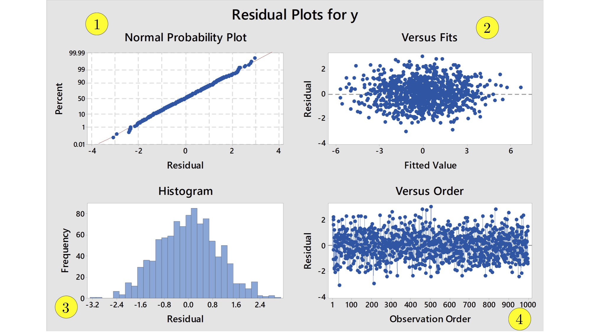

Section 9.3: Regression
- Identify the sample residuals / errors
\[e = y - \widehat{y} = y - (b_{0} + b_{1} x)\] from a regression of \(y\) on \(x\) (aka from predicting a response \(y\) using a predictor \(x\)).
- Describe and interpret a residual plot of \(e\) versus \(x\) or equivalently of \(e\) versus \(\widehat{y}\).
Section 9.4: Variation and Prediction Intervals
- Give two equivalent definitions of the coefficient of determination, aka \(R^{2}\), aka R-sq.
- State the common (though erroneous) way to use \(R^{2}\) as a way to evaluate a simple linear regression model.
- Relate the coefficient of determination to the sample linear correlation coefficient \(r_{xy}\).
Chapter 9 (Additional Handout): Assumptions, Diagnostics, and Inferences for the Simple Linear Regression Model with Normal Errors
Link to Handout
- Identify the five main assumptions of the simple linear regression model with normal residuals.
- Explain what the above assumptions indicate about how the true errors / residuals \(\epsilon_{i}\) should look when the simple linear regression model with normal residuals is appropriate.
- Use the diagnostic plots generated by Minitab, like the ones below, to determine whether the simple linear regression model with normal residuals is appropriate for the paired data under consideration.

- Interpret the standard errors for the estimators \(b_{0}\) and \(b_{1}\) reported by Minitab in terms of margins of error. Minitab calls the standard errors SE Coef.
- Identify the hypothesis tests associated with the \(P\)-values reported by Minitab.
- Interpret the P-values reported by Minitab in terms of hypothesis tests for the population intercept \(\beta_{0}\) and slope \(\beta_{1}\).